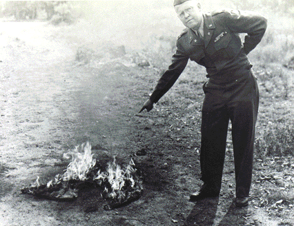

Fuhrerpants
rotten.com

|
Hitler's trousers, kept in a U.S. Army vault for two years, were
burned to "prevent their symbolic worship of what Hitler stood for".
The symbolic importance of the pants was not explained. These offending
pants were the ones Hitler wore when he was injured in
the July 20, 1944 assassination attempt which crippled his arm.
[U.S. Army Photo archive #304-534]
|


|